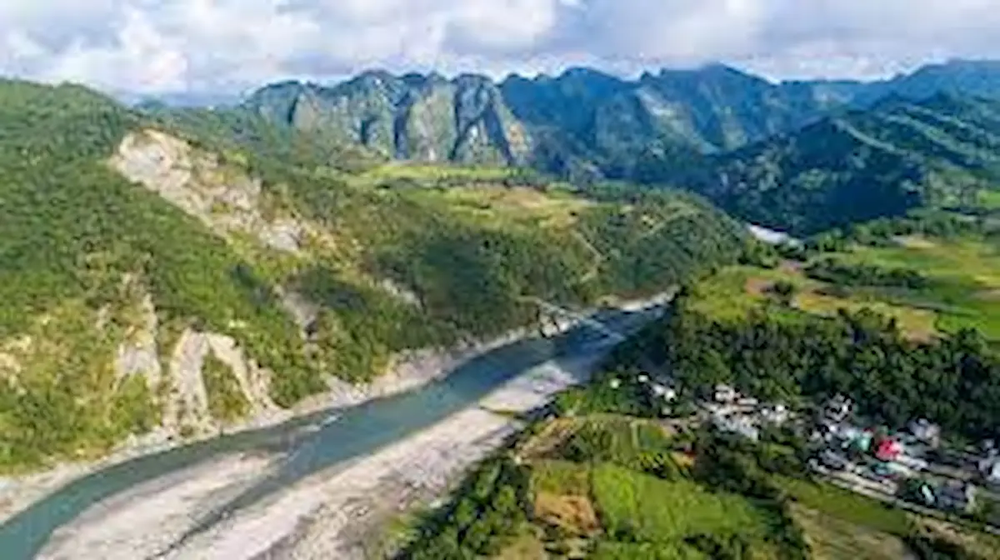
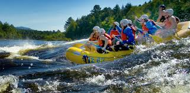
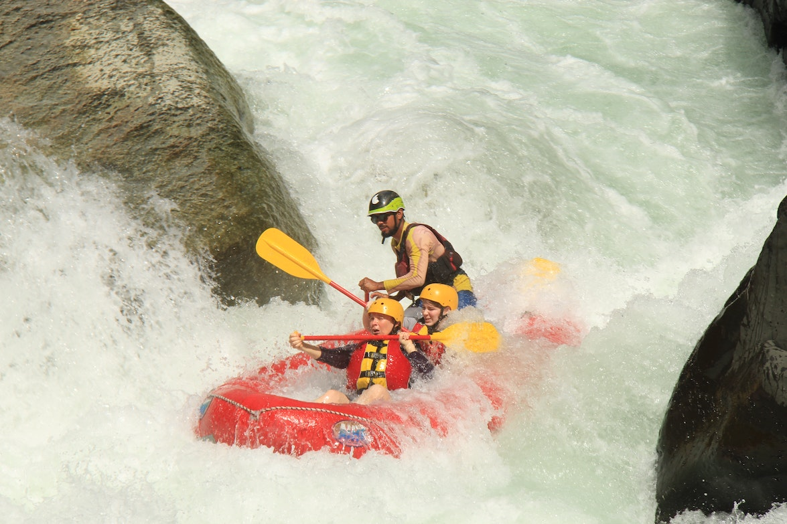

To anyone is in good health from 6 years old over and who wants to try something new and exciting.To the outdoor sports lovers and to who wants to challenge him-self.To who wants to experience mountains and nature from a different prospective.To who wants to have fun with a bunch of friends.To kids with their parents,to school groups and companies in an original and adventurous way.
Taiko White adventure
Adventure Awaits You!
Show-Gu River 2 days Trip
Da An River 1 day Trip
Gau Ping River 2 days Trip

This exciting adventure will take us through the mountain area in one of the most remote places in Taiwan, in the west of the Hwai Lian Natural Reserve, very close to the coast of the Pacific Ocean.
The Da An River flows from the center of Taiwan in a northwest direction through Miao Li to turn south, then turning into the Taiwan Strait.
The Gau Ping river runs from the high mountain ranges down through the Sacred Valley of the Da lin, past six turtles and into the city. It has some exciting white water depending on the section of the river being done and the time of the year.
| Itinerary | People | Price |
|---|---|---|
| Show-Gu River 2 days Trip | 6 | $450 |
| Da An River 1 day Trip | 6 | $400 |
| Gau Ping River 2 days Trip | 6 | $500 |